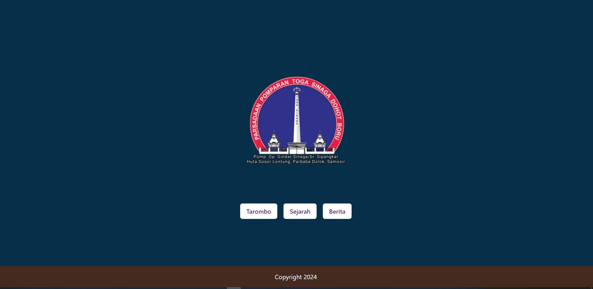

Portfolio
Karya-Karya Saya
Berikut adalah beberapa proyek yang telah saya kerjakan.

Project 1: Web Development
Proyek ini melibatkan pengembangan sebuah website menggunakan teknologi modern seperti HTML, CSS, dan JavaScript. Website ini menampilkan fitur-fitur interaktif dan desain responsif.

Project 2: Mobile App Design
Dalam proyek ini, saya merancang sebuah aplikasi mobile yang user-friendly dan memiliki desain antarmuka yang modern. Aplikasi ini dirancang untuk mempermudah pengguna dalam mengakses informasi dengan cepat.